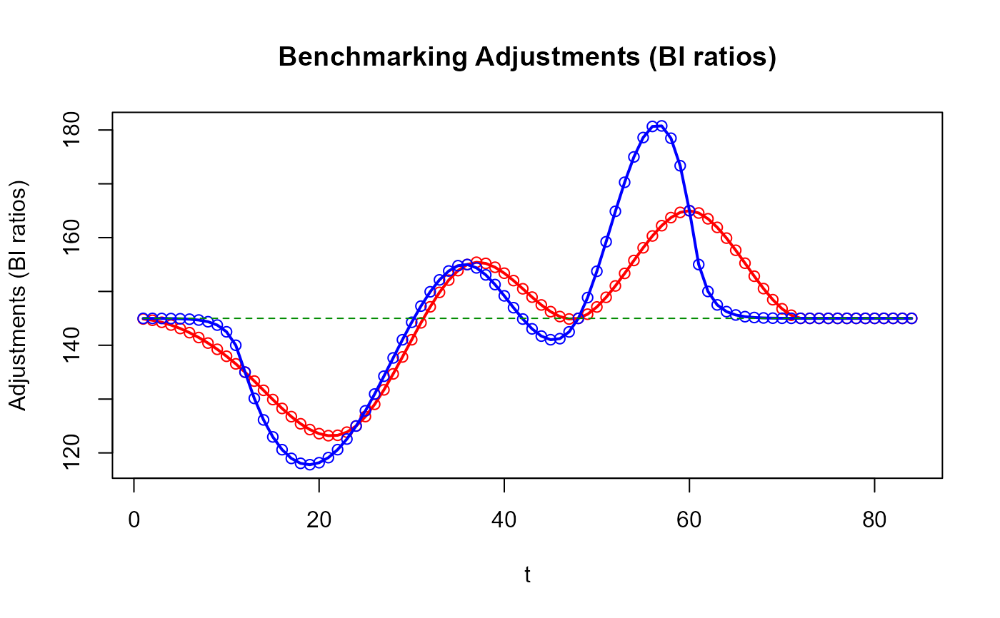
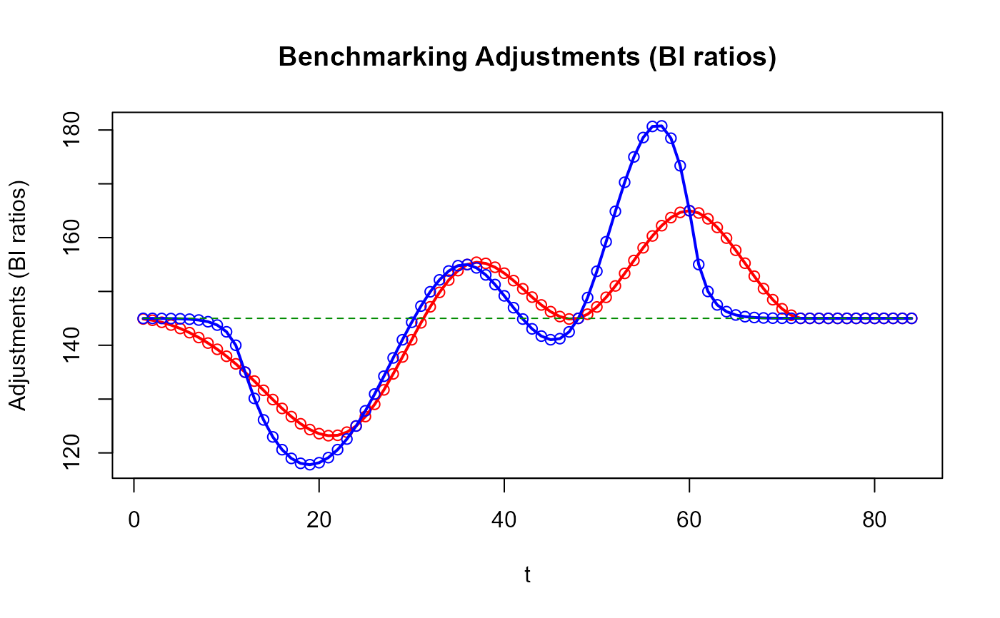

Rétablir les contraintes temporelles pour des séries de stocks
Source :R/stock_benchmarking.R
stock_benchmarking.RdFonction spécifiquement destinée à l'étalonnage des séries de stocks où les étalons sont des points d'ancrage couvrant
une seule période de la série indicatrice. Les étalons couvrant plus d'une période de la série indicatrice ne peuvent pas
être utilisés avec cette fonction. La fonction benchmarking() doit être utilisée à la place pour étalonner des séries de
flux (« non-stock »).
Plusieurs séries de stocks peuvent être étalonnées en un seul appel de fonction.
Notez que les fonctions stock_benchmarking() et benchmarking() partagent principalement les mêmes arguments et renvoient
le même type d'objet. Les différences sont énumérées ci-dessous :
L'argument
verbosen'est pas défini pourstock_benchmarking().Des arguments supplémentaires sont définis pour
stock_benchmarking():low_freq_periodicityn_low_freq_projproj_knots_rho_bd
La liste renvoyée par
stock_benchmarking()contient un data frame supplémentaire :splineKnots
Voir la section Détails pour plus d'informations sur les similitudes et les différences entre les fonctions
stock_benchmarking() et benchmarking().
Un équivalent direct de stock_benchmarking() n'existe pas dans G-Séries 2.0 en SAS\(^\circledR\).
Utilisation
stock_benchmarking(
series_df,
benchmarks_df,
rho,
lambda,
biasOption,
bias = NA,
low_freq_periodicity = NA,
n_low_freq_proj = 1,
proj_knots_rho_bd = 0.995,
tolV = 0.001,
tolP = NA,
warnNegResult = TRUE,
tolN = -0.001,
var = "value",
with = NULL,
by = NULL,
constant = 0,
negInput_option = 0,
allCols = FALSE,
quiet = FALSE
)Arguments
- series_df
(obligatoire)
Data frame, ou objet compatible, qui contient les données de la (des) série(s) indicatrice(s) à étalonner. En plus de la (des) variable(s) contenant les données, spécifiée(s) avec l'argument
var, le data frame doit aussi contenir deux variables numériques,yearetperiod, identifiant les périodes des séries indicatrices.- benchmarks_df
(obligatoire)
Data frame, ou objet compatible, qui contient les étalons. En plus de la (des) variable(s) contenant les données, spécifiée(s) avec l'argument
with, le data frame doit aussi contenir quatre variables numériques,startYear,startPeriod,endYearetendPeriod, identifiant les périodes des séries indicatrices couvertes par chaque étalon.- rho
(obligatoire)
Nombre réel compris dans l'intervalle \([0,1]\) qui spécifie la valeur du paramètre autorégressif \(\rho\). Voir la section Détails pour plus d'informations sur l'effet du paramètre \(\rho\).
- lambda
(obligatoire)
Nombre réel, avec des valeurs suggérées dans l'intervalle \([-3,3]\), qui spécifie la valeur du paramètre du modèle d'ajustement \(\lambda\). Les valeurs typiques sont
lambda = 0.0pour un modèle additif etlambda = 1.0pour un modèle proportionnel.- biasOption
(obligatoire)
Spécification de l'option d'estimation du biais :
1: Ne pas estimer le biais. Le biais utilisé pour corriger la série indicatrice sera la valeur spécifiée avec l'argumentbias.2: Estimer le biais, afficher le résultat, mais ne pas l'utiliser. Le biais utilisé pour corriger la série indicatrice sera la valeur spécifiée avec l'argumentbias.3: Estimer le biais, afficher le résultat et utiliser le biais estimé pour corriger la série indicatrice. Toute valeur spécifiée avec l'argumentbiassera ignorée.
L'argument
biasOptionn'est pas utilisé quandrho = 1.0. Voir la section Détails pour plus d'informations sur le biais.- bias
(optionnel)
Nombre réel, ou
NA, spécifiant la valeur du biais défini par l'utilisateur à utiliser pour la correction de la série indicatrice avant de procéder à l'étalonnage. Le biais est ajouté à la série indicatrice avec un modèle additif (argumentlambda = 0.0) alors qu'il est multiplié dans le cas contraire (argumentlambda != 0.0). Aucune correction de biais n'est appliquée lorsquebias = NA, ce qui équivaut à spécifierbias = 0.0lorsquelambda = 0.0etbias = 1.0dans le cas contraire. L'argumentbiasn'est pas utilisé lorsquebiasOption = 3ourho = 1.0. Voir la section Détails pour plus d'informations sur le biais.La valeur par défaut est
bias = NA(pas de biais défini par l'utilisateur).- low_freq_periodicity
(optionnel)
Nombre entier positif représentant le nombre de périodes définissant la basse fréquence (e.g., celle des étalons) pour l'ajout de nœuds supplémentaires à la spline cubique (avant le premier étalon et après le dernier étalon). Par exemple,
low_freq_periodicity = 3avec des indicateurs mensuels définira des nœuds trimestriels. Des nœuds annuels sont ajoutés lorsquelow_freq_periodicity = NA.La valeur par défaut est
low_freq_periodicity = NA(nœuds annuels).- n_low_freq_proj
(optionnel)
Entier non négatif représentant le nombre de nœuds de basse fréquence (tel que défini avec l'argument
low_freq_periodicity) à ajouter aux deux extrémités (avant le premier étalon et après le dernier étalon) avant de commencer à ajouter des nœuds de haute fréquence (celle de la série indicatrice).La valeur par défaut est
n_low_freq_proj = 1.- proj_knots_rho_bd
(optionnel)
Limite qui s'applique à la valeur spécifiée avec l'argument
rhoet qui determine le type noœuds supplémentaires à ajouter aux deux extrémités (avant le premier étalon et après le dernier étalon). Lorsquerho > proj_knots_rho_bd, des nœuds de haute fréquence (celle de la série indicatrice) sont utilisés immédiatement aux deux extrémité. Autrement, lorsquerho <= proj_knots_rho_bd, des nœuds de basse fréquence (voir les argumentslow_freq_periodicityetn_low_freq_proj) sont d'abord projetés de part et d'autre. Notez que pour des stocks trimestriels, le cube deproj_knots_rho_bdest utilisé. Par conséquent, la valeur de l'argumentproj_knots_rho_bddoit correspondre à des indicateurs de stocks mensuels; elle est ajustée à l'interne pour des stocks trimestriels. Cet argument vise à atteindre un compromis pour les périodes à l'extérieur (avant ou après) les étalons (points d'ancrage) fournis en entrée, c'est-à-dire des ajustements de type Denton (en ligne droite) lorsquerhos'approche de 1 (lorsquerho > proj_knots_rho_bd) et une spline cubique d'apparence normale (sans contorsions excessives) dans le cas contraire (lorsquerho <= proj_knots_rho_bd). La section Détails contient plus d'informations sur ce sujet et certains cas illustratifs sont fournis dans la section Exemples.La valeur par défaut est
proj_knots_rho_bd = 0.995(\(0.995^3\) pour des indicateurs de stocks trimestriels).- tolV, tolP
(optionnel)
Nombre réel non négatif, ou
NA, spécifiant la tolérance, en valeur absolue ou en pourcentage, à utiliser pour la validation des étalons contraignants (coefficient d'altérabilité de \(0.0\)) en sortie. Cette validation consiste à comparer la valeur des étalons contraignants en entrée à la valeur équivalente calculée à partir des données de la série étalonnée (sortie). Les argumentstolVettolPne peuvent pas être spécifiés tous les deux à la fois (l'un doit être spécifié tandis que l'autre doit êtreNA).Exemple : pour une tolérance de 10 unités, spécifiez
tolV = 10, tolP = NA; pour une tolérance de 1%, spécifieztolV = NA, tolP = 0.01.Les valeurs par défaut sont
tolV = 0.001ettolP = NA.- warnNegResult
(optionnel)
Argument logique (logical) spécifiant si un message d'avertissement doit être affiché lorsqu'une valeur négative créée par la fonction dans la série étalonnée (en sortie) est inférieure au seuil spécifié avec l'argument
tolN.La valeur par défaut est
warnNegResult = TRUE.- tolN
(optionnel)
Nombre réel négatif spécifiant le seuil pour l'identification des valeurs négatives. Une valeur est considérée négative lorsqu'elle est inférieure à ce seuil.
La valeur par défaut est
tolN = -0.001.- var
(optionnel)
Vecteur (longueur minimale de 1) de chaînes de caractères spécifiant le(s) nom(s) de variable(s) du data frame des séries indicatrices (argument
series_df) contenant les valeurs et (optionnellement) les coefficients d'altérabilité définis par l'utilisateur de la (des) série(s) à étalonner. Ces variables doivent être numériques.La syntaxe est
var = c("serie1 </ alt_ser1>", "serie2 </ alt_ser2>", ...). Des coefficients d'altérabilité par défaut de \(1.0\) sont utilisés lorsqu'une variable de coefficients d'altérabilité définie par l'utilisateur n'est pas spécifiée à côté d'une variable de série indicatrice. Voir la section Détails pour plus d'informations sur les coefficients d'altérabilité.Exemple :
var = "value / alter"étalonnerait la variablevaluedu data frame des séries indicatrices avec les coefficients d'altérabilité contenus dans la variablealtertandis quevar = c("value / alter", "value2")étalonnerait en plus la variablevalue2avec des coefficients d'altérabilité par défaut de \(1.0\).La valeur par défaut est
var = "value"(étalonner la variablevalueavec des coefficients d'altérabilité par défaut de \(1.0\)).- with
(optionnel)
Vecteur (même longueur que l'argument
var) de chaînes de caractères, ouNULL, spécifiant le(s) nom(s) de variable(s) du data frame des étalons (argumentbenchmarks_df) contenant les valeurs et (optionnellement) les coefficients d'altérabilité définis par l'utilisateur des étalons. Ces variables doivent être numériques. La spécification dewith = NULLentraîne l'utilisation de variable(s) d'étalons correspondant à la (aux) variable(s) spécifiée(s) avec l'argumentvarsans coefficients d'altérabilité d'étalons définis par l'utilisateur (c'est à dire des coefficients d'altérabilité par défaut de \(0.0\) correspondant à des étalons contraignants).La syntaxe est
with = NULLouwith = c("bmk1 </ alt_bmk1>", "bmk2 </ alt_bmk2>", ...). Des coefficients d'altérabilité par défaut de \(0.0\) (étalons contraignants) sont utilisés lorsqu'une variable de coefficients d'altérabilité définie par l'utilisateur n'est pas spécifiée à côté d'une variable d'étalon. Voir la section Détails pour plus d'informations sur les coefficients d'altérabilité.Exemple :
with = "val_bmk"utiliserait la variableval_bmkdu data frame des étalons avec les coefficients d'altérabilité par défaut de \(0.0\) pour étalonner la série indicatrice tandis quewith = c("val_bmk", "val_bmk2 / alt_bmk2")étalonnerait en plus une deuxième série indicatrice en utilisant la variable d'étalonsval_bmk2avec les coefficients d'altérabilité d'étalons contenus dans la variablealt_bmk2.La valeur par défaut est
with = NULL(même(s) variable(s) d'étalons que l'argumentvaravec des coefficients d'altérabilité d'étalons par défaut de \(0.0\)).- by
(optionnel)
Vecteur (longueur minimale de 1) de chaînes de caractères, ou
NULL, spécifiant le(s) nom(s) de variable(s) dans les data frames d'entrée (argumentsseries_dfetbenchmarks_df) à utiliser pour former des groupes (pour le traitement « groupes-BY ») et permettre l'étalonnage de plusieurs séries en un seul appel de fonction. Les variables groupes-BY peuvent être numériques ou caractères (facteurs ou non), doivent être présentes dans les deux data frames d'entrée et apparaîtront dans les trois data frames de sortie (voir la section Valeur de retour). Le traitement groupes-BY n'est pas implémenté lorsqueby = NULL. Voir « Étalonnage de plusieurs séries » dans la section Détails pour plus d'informations.La valeur par défaut est
by = NULL(pas de traitement groupes-BY).- constant
(optionnel)
Nombre réel qui spécifie une valeur à ajouter temporairement à la fois à la (aux) série(s) indicatrice(s) et aux étalons avant de résoudre les problèmes d'étalonnage proportionnels (
lambda != 0.0). La constante temporaire est enlevée de la série étalonnée finale en sortie. Par exemple, la spécification d'une (petite) constante permettrait l'étalonnage proportionnel avecrho = 1(étalonnage de Denton proportionnel) sur avec des séries indicatrices qui comprennent des valeurs de 0. Sinon, l'étalonnage proportionnel avec des valeurs de 0 pour la série indicatrice n'est possible que lorsquerho < 1. Spécifier une constante avec l'étalonnage additif (lambda = 0.0) n'a pas d'impact sur les données étalonnées résultantes. Les variables de données dans le data frame de sortie graphTable incluent la constante, correspondant au problème d'étalonnage effectivement résolu par la fonction.La valeur par défaut est
constant = 0(pas de constante additive temporaire).- negInput_option
(optionnel)
Traitement des valeurs négatives dans les données d'entrée pour l'étalonnage proportionnel (
lambda != 0.0) :0: Ne pas autoriser les valeurs négatives pour l'étalonnage proportionnel. Un message d'erreur est affiché en présence de valeurs négatives dans les séries indicatrices ou les étalons d'entrée et des valeurs manquantes (NA) sont renvoyées pour les séries étalonnées. Ceci correspond au comportement de G-Séries 2.0.1: Autoriser les valeurs négatives pour l'étalonnage proportionnel mais avec l'affichage d'un message d'avertissement.2: Autoriser les valeurs négatives pour l'étalonnage proportionnel sans afficher de message.
La valeur par défaut est
negInput_option = 0(ne pas autoriser les valeurs négatives pour l'étalonnage proportionnel).- allCols
(optionnel)
Argument logique (logical) spécifiant si toutes les variables du data frame des séries indicatrices (argument
series_df), autres queyearetperiod, déterminent l'ensemble des séries à étalonner. Les valeurs spécifiées avec les argumentsvaretwithsont ignorées lorsqueallCols = TRUE, ce qui implique automatiquement des coefficients d'altérabilité par défaut, et des variables avec les mêmes noms que les séries indicatrices doivent exister dans le data frame des étalons (argumentbenchmarks_df).La valeur par défaut est
allCols = FALSE.- quiet
(optionnel)
Argument logique (logical) spécifiant s'il faut ou non afficher uniquement les informations essentielles telles que les messages d'avertissements, les messages d'erreurs et les informations sur les variables (séries) ou les groupes-BY lorsque plusieurs séries sont étalonnées en un seul appel à la fonction. Nous vous déconseillons d'envelopper votre appel à
benchmarking()avecsuppressMessages()afin de supprimer l'affichage des informations sur les variables (séries) ou les groupes-BY lors du traitement de plusieurs séries, car cela compliquerait le dépannage en cas de problèmes avec des séries individuelles. Notez que la spécification dequiet = TRUEannulera également l'argumentverbose.La valeur par défaut est
quiet = FALSE.
Valeur de retour
La fonction renvoie une liste de quatre data frames :
series : data frame contenant les données étalonnées (sortie principale de la fonction). Les variables BY spécifiées avec l'argument
bysont incluses dans le data frame mais pas les variables de coefficient d'altérabilité spécifiées avec l'argumentvar.benchmarks : copie du data frame d'entrée des étalons (à l'exclusion des étalons non valides, le cas échéant). Les variables BY spécifiées avec l'argument
bysont incluses dans le data frame mais pas les variables de coefficient d'altérabilité spécifiées avec l'argumentwith.graphTable : data frame contenant des données supplémentaires utiles pour produire des tableaux et des graphiques analytiques (voir la fonction
plot_graphTable()). Il contient les variables suivantes en plus des variables BY spécifiées avec l'argumentby:varSeries: Nom de la variable de la série indicatricevarBenchmarks: Nom de la variable des étalonsaltSeries: Nom de la variable des coefficients d'altérabilité définis par l'utilisateur pour la série indicatricealtSeriesValue: Coefficients d'altérabilité de la série indicatricealtbenchmarks: Nom de la variable des coefficients d'altérabilité définis par l'utilisateur pour les étalonsaltBenchmarksValue: Coefficients d'altérabilité des étalonst: Identificateur de la période de la série indicatrice (1 à \(T\))m: Identificateur des périodes de couverture de l'étalon (1 à \(M\))year: Année civile du point de donnéesperiod: Valeur de la période (du cycle) du point de données (1 àperiodicity)rho: Paramètre autorégressif \(\rho\) (argumentrho)lambda: Paramètre du modèle d'ajustement \(\lambda\) (argumentlambda)bias: Ajustement du biais (par défaut, défini par l'utilisateur ou biais estimé selon les argumentsbiasOptionetbias)periodicity: Le nombre maximum de périodes dans une année (par exemple 4 pour une série indicatrice trimestrielle)date: Chaîne de caractères combinant les valeurs des variablesyearetperiodsubAnnual: Valeurs de la série indicatricebenchmarked: Valeurs de la série étalonnéeavgBenchmark: Valeurs des étalons divisées par le nombre de périodes de couvertureavgSubAnnual: Valeurs moyennes de la série indicatrice (variablesubAnnual) pour les périodes couvertes par les étalonssubAnnualCorrected: Valeurs de la série indicatrice corrigée pour le biaisbenchmarkedSubAnnualRatio: Différence (\(\lambda = 0\)) ou ratio (\(\lambda \ne 0\)) des valeurs des variablesbenchmarkedetsubAnnualavgBenchmarkSubAnnualRatio: Différence (\(\lambda = 0\)) ou ratio (\(\lambda \ne 0\)) des valeurs des variablesavgBenchmarketavgSubAnnualgrowthRateSubAnnual: Différence (\(\lambda = 0\)) ou différence relative (\(\lambda \ne 0\)) d'une période à l'autre des valeurs de la série indicatrice (variablesubAnnual)growthRateBenchmarked: Différence (\(\lambda = 0\)) ou différence relative (\(\lambda \ne 0\)) d'une période à l'autre des valeurs de la série étalonnée (variablebenchmarked)
splineKnots : ensemble de coordonnées
xety(nœuds) utilisées pour estimer la spline cubique naturelle avec la fonctionstats::spline(). En plus de l'ensemble original de nœuds correspondant aux étalons (points d'ancrage) contraignants, des nœuds supplémentaires sont également ajoutés au début et à la fin afin de traiter le problème d'actualité de l'étalonnage et d'approximer une spline de pente=0 aux deux extrémités (voir section Détails). Il contient les variables suivantes en plus des variables BY spécifiées avec l'argumentby:varSeries: Nom de la variable de la série indicatricevarBenchmarks: Nom de la variable des étalonsx: Coordonnéexde la spline cubiquey: Coordonnéeyde la spline cubiqueextraKnot: Valeur logique (logical) identifiant les nœuds supplémentaires ajoutés au début et à la fin.
Les enregistrements pour lesquels
extraKnot == FALSEcorrespondent aux enregistrements du data frame de sortie graphTable pour lesquelsmn'est pas manquant (pasNA), avecx = tety = benchmarkedSubAnnualRatio.
Notes :
Le data frame de sortie benchmarks contient toujours les étalons originaux fournis dans le data frame d'entrée des étalons. Les étalons modifiés non contraignants, le cas échéant, peuvent être récupérés (calculés) à partir du data frame de sortie series.
La fonction renvoie un objet
NULLsi une erreur se produit avant que le traitement des données ne puisse commencer. Dans le cas contraire, si l'exécution est suffisamment avancée pour que le traitement des données puisse commencer, alors un objet incomplet sera renvoyé en cas d'erreur (par exemple, un data frame de sortie series avec des valeursNApour les données étalonnées).La fonction renvoie des objets « data.frame » qui peuvent être explicitement convertis en d'autres types d'objets avec la fonction
as*()appropriée (ex.,tibble::as_tibble()convertirait n'importe lequel d'entre eux en tibble).
Détails
Comparaison avec benchmarking()
Avec des séries de stocks, benchmarking() est connu pour produire des bris dans les ajustements d'étalonnage aux périodes
correspondant aux étalons (points d'ancrage). stock_benchmarking() résout ce problème en travaillant directement sur les
ajustements d'étalonnage. Des ajustements lisses pour les stocks sont garantis en estimant une spline cubique de pente=0
(une spline qui est plate aux deux extrémités) passant par les nœuds correspondant à la différence (lorsque l'argument
lambda = 0.0) ou au ratio (sinon) entre les étalons (points d'ancrage) et les valeurs correspondantes de la série indicatrice.
Ces nœuds sont parfois appelés différences BI ou ratios BI (Benchmark-to-Indicator en anglais). Les
interpolations à partir de la spline cubique estimée fournissent alors les ajustements d'étalonnage pour les périodes entre
les étalons.
Les arguments rho, lambda, biasOption et bias jouent un rôle similaire à ceux de benchmarking(). Cependant, notez que
pour stock_benchmarking(), l'argument rho n'affecte les résultats que pour les périodes à l'extérieur, ou autour, du premier
et du dernier étalon et lambda ne prend que deux valeurs en pratique : lambda = 0.0 pour des ajustements additifs
(interpolations par spline cubique où les nœuds sont des différences BI) ou lambda = 1.0 pour des ajustements multiplicatifs
(interpolations par spline cubique où les nœuds sont des ratios BI). Toute valeur non nulle pour lambda donnerait le même
résultat que lambda = 1.0. Les coefficients d'altérabilité jouent également un rôle similaire à ceux de benchmarking() et ont
les mêmes valeurs par défaut, c'est-à-dire \(1.0\) pour la série indicatrice (valeurs non contraignantes) et \(0.0\) pour
les étalons (étalons contraignants). Cependant, comme pour l'argument lambda, les coefficients d'altérabilité de cette
fonction ne prennent que deux valeurs en pratique : \(0.0\) pour des valeurs contraignantes ou \(1.0\) pour des valeurs
non contraignantes. Tout coefficient d'altérabilité non nul renverrait le même résultat qu'un coefficient de \(1.0\). Une
autre différence avec benchmarking() est que les coefficients d'altérabilité définis par l'utilisateur sont autorisés même
si rho = 1 avec stock_benchmarking(). Enfin, le fait de spécifier un étalon non contraignant avec stock_benchmarking()
équivaut à l'ignorer complètement, comme si l'étalon en question n'était pas inclus dans le fichier d'entrée des étalons. Par
rapport à benchmarking(), cette approche se traduit généralement par un impact plus important des étalons non contraignants
sur les résultats de l'étalonnage (sur les stocks étalonnés résultants).
Solution autour des premier et dernier étalons (problème d'actualité de l'étalonnage)
Une spline de pente=0 est choisie parce qu'elle correspond conceptuellement à l'approche (populaire) d'étalonnage de
Denton (rho = 1). Afin de fournir une solution avant le premier étalon et après le dernier étalon qui soit semblable à
celle de benchmarking() lorsque rho < 1, c'est-à-dire des ajustements convergeant vers le biais à une vitesse dictée par
l'argument rho, des nœuds supplémentaires sont ajoutés aux deux extrémités avant d'estimer la spline. Par défaut, un nœud
supplémentaire de basse fréquence (défini par l'argument low_freq_periodicity) est ajouté de chaque côté (au début et à la fin),
c'est-à-dire qu'un nœud supplémentaire est ajouté avant le premier étalon et après le dernier étalon. Ensuite, des nœuds de
haute fréquence (celle de la série indicatrice) sont ajoutés pour couvrir l'étendue de la série indicatrice, à laquelle est
ajoutée une année supplémentaire de nœuds de haute fréquence. La valeur de tous ces nœuds supplémentaires est basée sur les
arguments rho, biasOption et bias. Cela produit des ajustements lisses et naturels pour les périodes à l'extérieur, ou
autour, des premier et dernier étalons qui convergent progressivement vers le biais, de manière similaire à benchmarking().
Le nombre de nœuds supplémentaires de basse fréquence à ajouter peut être modifié avec l'argument n_low_freq_proj.
L'utilisation immédiate de nœuds de haute fréquence (n_low_freq_proj = 0) produirait les mêmes ajustements projetés que
benchmarking(). Cependant, notez que cela tend à produire une spline d'apparence peu naturelle (exagérément contortionnée)
autour des premier et dernier étalons qui pourrait être révisée de manière substantielle une fois que le prochain étalon sera
disponible. L'utilisation de la valeur par défaut n_low_freq_proj = 1 fonctionne généralement mieux. Cependant, lorsque
rho est proche de 1 (voir l'argument proj_knots_rho_bd), des noeuds de haute fréquence sont immédiatement ajoutés de
chaque côté afin d'assurer des ajustements projetés de type Denton (en ligne droite) pour les périodes à l'extérieur des
premier et dernier étalons. Enfin, une spline cubique de pente=0 passant à travers les nœuds (originaux et supplémentaires)
est estimée. Notez qu'en pratique, la spline de pente=0 est en fait approximée en reproduisant la valeur des nœuds aux
extrémités 100 fois au cours de la période suivante (à une fréquence correspondant à 100 fois la fréquence de la série
indicatrice).
Une spline naturelle aux nœuds d'extrémité originaux (premier et dernier étalons) peut être approximée en spécifiant
une grande valeur pour l'argument low_freq_periodicity. Plus la valeur de low_freq_periodicity est grande, plus la spline
cubique se comportera comme une spline naturelle (dérivée seconde égale à 0 aux extrémités, c'est-à-dire une spline qui
garde une pente constante aux extrémités au lieu d'être plate comme une spline de pente=0).
En résumé, les ajustements projetés sont contrôlés avec les arguments rho, bias (et biasOption), n_low_freq_proj,
proj_knots_rho_bd et low_freq_periodicity :
Les valeurs par défaut de ces arguments produisent des ajustements projetés du type fonction
benchmarking(convergence raisonnablement lente vers le biais).Des valeurs plus petites de
rhogénéreraient une convergence plus rapide vers le biais.Spécifier un biais défini par l'utilisateur avec l'argument
biaslorsquerho < 1est une autre façon d'influencer la forme des ajustements projetés.Spécifier
rho = 1produit des ajustements projetés de type Denton (premiers/derniers ajustements répétés sans convergence vers le biais).Spécifier une grande valeur pour
low_freq_periodicitygénère des ajustements projetés qui se comportent plus comme une spline naturelle, c'est-à-dire des ajustements qui continuent dans la même direction au premier/dernier étalon. Plus la valeur delow_freq_periodicityest grande, plus les ajustements projetés continuent à aller dans la même direction avant de tourner.
La spline cubique associée aux ajustements de stock_benchmarking() peut être commodément tracée avec plot_benchAdj().
Note sur les révisions des ajustements d'étalonnage
Les ajustements de benchmarking() ne seraient pas révisés si tous les futurs étalons tombaient exactement sur ceux qui sont
projetés (sur la base du biais et de la valeur de rho) et si le biais était fixé. La même chose pourrait être obtenue avec
stock_benchmarking() si suffisamment de nœuds de basse fréquence (celle des étalons) étaient projetés. Le problème avec
cette approche, cependant, est que les ajustements projetés peuvent ne pas sembler naturels car la spline peut osciller plus
que souhaité autour des nœuds projetés. Ceci est clairement perceptible lorsque rho s'approche de 1 et que la spline oscille
autour des nœuds projetés alignés horizontalement au lieu d'être alignée sur une ligne parfaitement droite. L'implémentation
par défaut de la spline autour des premier et dernier étalons décrite précédemment vise à atteindre une solution de meilleur
compromis :
une spline d'apparence naturelle aux extrémités évitant les oscillations et les contorsions excessives;
de petites révisions de la spline si l'étalon suivant est proche de celui projeté lorsque
rhoest assez éloigné de 1 (rho <= proj_knots_rho_bd);ajustements projetés qui sont en ligne droite (sans oscillations) lorsque
rhos'approche de 1 (rho > proj_knots_rho_bd).
Les sous-sections Étalonnage de plusieurs séries, Arguments constant et negInput_option et Traitement des valeurs
manquantes (NA) à la fin de la section Détails de benchmarking() sont également pertinentes pour
stock_benchmarking(). Consultez-les au besoin.
Enfin, notez que la spline cubique associée aux ajustements de stock_benchmarking() peut être commodément tracée avec
plot_benchAdj(). Cette dernière est utilisée dans les Exemples pour illustrer certains des sujets abordés ci-dessus.
Références
Statistique Canada (2012). « Chapitre 5 : Étalonnage de stocks ». Théorie et application de l’étalonnage (Code du cours 0436). Statistique Canada, Ottawa, Canada.
Exemples
# Série de stocks trimestriels (même patron répété chaque année)
mes_ind <- ts_to_tsDF(ts(rep(c(85, 95, 125, 95), 7),
start = c(2013, 1),
frequency = 4))
head(mes_ind)
#> year period value
#> 1 2013 1 85
#> 2 2013 2 95
#> 3 2013 3 125
#> 4 2013 4 95
#> 5 2014 1 85
#> 6 2014 2 95
# Étalons annuels (stocks de fin d'année)
mes_eta <- ts_to_bmkDF(ts(c(135, 125, 155, 145, 165),
start = 2013,
frequency = 1),
discrete_flag = TRUE,
alignment = "e",
ind_frequency = 4)
mes_eta
#> startYear startPeriod endYear endPeriod value
#> 1 2013 4 2013 4 135
#> 2 2014 4 2014 4 125
#> 3 2015 4 2015 4 155
#> 4 2016 4 2016 4 145
#> 5 2017 4 2017 4 165
# Étalonnage avec...
# - valeur de `rho` recommandée pour des séries trimestrielles (`rho = 0.729`)
# - modèle proportionnel (`lambda = 1`)
# - correction de la série indicatrice pour le biais avec estimation du biais
# (`biasOption = 3`)
# ... avec `benchmarking()` (approche « Proc Benchmarking »)
res_PB <- benchmarking(mes_ind,
mes_eta,
rho = 0.729,
lambda = 1,
biasOption = 3)
#>
#>
#> --- Package gstest 3.0.0 - (EN) 'G-Series' in 'R' | (FR) 'G-Séries' en 'R' ---
#> Created on April 8, 2025, at 3:40:01 PM EDT
#> URL: https://ferlmic.github.io/gstest/en/
#> https://ferlmic.github.io/gstest/fr/
#> Email: g-series@statcan.gc.ca
#>
#> benchmarking() function:
#> series_df = mes_ind
#> benchmarks_df = mes_eta
#> rho = 0.729
#> lambda = 1
#> biasOption = 3 (Calculate bias, use calculated bias)
#> bias (ignored)
#> tolV = 0.001 (default)
#> warnNegResult = TRUE (default)
#> tolN = -0.001 (default)
#> var = value (default)
#> with = NULL (default)
#> by = NULL (default)
#> verbose = FALSE (default)
#> (*)constant = 0 (default)
#> (*)negInput_option = 0 (default)
#> (*)allCols = FALSE (default)
#> (*)quiet = FALSE (default)
#> (*) indicates new arguments in G-Series 3.0
#> Number of observations in the BENCHMARKS data frame .............: 5
#> Number of valid observations in the BENCHMARKS data frame .......: 5
#> Number of observations in the SERIES data frame .................: 28
#> Number of valid observations in the SERIES data frame ...........: 28
#> BIAS = 1.526316 (calculated)
# ... avec `stock_benchmarking()` (approche « Stock Benchmarking »)
res_SB <- stock_benchmarking(mes_ind,
mes_eta,
rho = 0.729,
lambda = 1,
biasOption = 3)
#>
#>
#> --- Package gstest 3.0.0 - (EN) 'G-Series' in 'R' | (FR) 'G-Séries' en 'R' ---
#> Created on April 8, 2025, at 3:40:01 PM EDT
#> URL: https://ferlmic.github.io/gstest/en/
#> https://ferlmic.github.io/gstest/fr/
#> Email: g-series@statcan.gc.ca
#>
#> stock_benchmarking() function:
#> series_df = mes_ind
#> benchmarks_df = mes_eta
#> rho = 0.729
#> lambda = 1
#> biasOption = 3 (Calculate bias, use calculated bias)
#> bias (ignored)
#> low_freq_periodicity = NA (default)
#> n_low_freq_proj = 1 (default)
#> proj_knots_rho_bd = 0.995 (default)
#> tolV = 0.001 (default)
#> warnNegResult = TRUE (default)
#> tolN = -0.001 (default)
#> var = value (default)
#> with = NULL (default)
#> by = NULL (default)
#> constant = 0 (default)
#> negInput_option = 0 (default)
#> allCols = FALSE (default)
#> quiet = FALSE (default)
#> Number of observations in the BENCHMARKS data frame .............: 5
#> Number of valid observations in the BENCHMARKS data frame .......: 5
#> Number of observations in the SERIES data frame .................: 28
#> Number of valid observations in the SERIES data frame ...........: 28
#> BIAS = 1.526316 (calculated)
# Comparer les ajustements d'étalonnage des deux approches
plot_benchAdj(PB_graphTable = res_PB$graphTable,
SB_graphTable = res_SB$graphTable)
 # Avez-vous remarqué que les ajustements de `stock_benchmarking()` sont plus lisses
# que ceux de `benchmarking()` ?
# L'amélioration de la qualité des données étalonnées qui en résulte n'est pas
# nécessairement évidente dans cet exemple.
plot(res_SB$graphTable$t, res_SB$graphTable$benchmarked,
type = "b", col = "red", xlab = "t", ylab = "Stocks étalonnés")
lines(res_PB$graphTable$t, res_PB$graphTable$benchmarked,
type = "b", col = "blue")
legend(x = "topleft", bty = "n", inset = 0.05, lty = 1, pch = 1,
col = c("red", "blue"), legend = c("res_SB", "res_PB"))
title("Stocks étalonnés")
# Qu'en est-il des cas où un indicateur plat (rectiligne) est utilisé, ce qui se produit
# souvent en pratique en l'absence d'un bon indicateur des mouvements infra-annuels ?
mes_inds2 <- mes_ind
mes_inds2$value <- 1 # indicateur plat
res_PB2 <- benchmarking(mes_inds2,
mes_eta,
rho = 0.729,
lambda = 1,
biasOption = 3,
quiet = TRUE) # ne pas afficher l'en-tête
res_SB2 <- stock_benchmarking(mes_inds2,
mes_eta,
rho = 0.729,
lambda = 1,
biasOption = 3,
quiet = TRUE) # ne pas afficher l'en-tête
plot(res_SB2$graphTable$t, res_SB2$graphTable$benchmarked,
type = "b", col = "red", xlab = "t", ylab = "Stocks étalonnés")
lines(res_PB2$graphTable$t, res_PB2$graphTable$benchmarked,
type = "b", col = "blue")
legend(x = "topleft", bty = "n", inset = 0.05, lty = 1, pch = 1,
col = c("red", "blue"), legend = c("res_SB2", "res_PB2"))
title("Stocks étalonnés - Indicateur plat")
# L'apparence plutôt étrange des valeurs étalonnées produites par `benchmarking()` devient
# soudainement plus évidente. En effet, la série étalonnée correspond aux ajustements
# d'étalonnage lorsqu'on utilise un indicateur plat (par exemple, une série de 1 avec
# un étalonnage proportionnel) :
plot_benchAdj(PB_graphTable = res_PB2$graphTable,
SB_graphTable = res_SB2$graphTable)
# Avez-vous remarqué que les ajustements de `stock_benchmarking()` sont plus lisses
# que ceux de `benchmarking()` ?
# L'amélioration de la qualité des données étalonnées qui en résulte n'est pas
# nécessairement évidente dans cet exemple.
plot(res_SB$graphTable$t, res_SB$graphTable$benchmarked,
type = "b", col = "red", xlab = "t", ylab = "Stocks étalonnés")
lines(res_PB$graphTable$t, res_PB$graphTable$benchmarked,
type = "b", col = "blue")
legend(x = "topleft", bty = "n", inset = 0.05, lty = 1, pch = 1,
col = c("red", "blue"), legend = c("res_SB", "res_PB"))
title("Stocks étalonnés")
# Qu'en est-il des cas où un indicateur plat (rectiligne) est utilisé, ce qui se produit
# souvent en pratique en l'absence d'un bon indicateur des mouvements infra-annuels ?
mes_inds2 <- mes_ind
mes_inds2$value <- 1 # indicateur plat
res_PB2 <- benchmarking(mes_inds2,
mes_eta,
rho = 0.729,
lambda = 1,
biasOption = 3,
quiet = TRUE) # ne pas afficher l'en-tête
res_SB2 <- stock_benchmarking(mes_inds2,
mes_eta,
rho = 0.729,
lambda = 1,
biasOption = 3,
quiet = TRUE) # ne pas afficher l'en-tête
plot(res_SB2$graphTable$t, res_SB2$graphTable$benchmarked,
type = "b", col = "red", xlab = "t", ylab = "Stocks étalonnés")
lines(res_PB2$graphTable$t, res_PB2$graphTable$benchmarked,
type = "b", col = "blue")
legend(x = "topleft", bty = "n", inset = 0.05, lty = 1, pch = 1,
col = c("red", "blue"), legend = c("res_SB2", "res_PB2"))
title("Stocks étalonnés - Indicateur plat")
# L'apparence plutôt étrange des valeurs étalonnées produites par `benchmarking()` devient
# soudainement plus évidente. En effet, la série étalonnée correspond aux ajustements
# d'étalonnage lorsqu'on utilise un indicateur plat (par exemple, une série de 1 avec
# un étalonnage proportionnel) :
plot_benchAdj(PB_graphTable = res_PB2$graphTable,
SB_graphTable = res_SB2$graphTable)
 # Les lacunes de l'approche « Proc Benchmarking » (fonction `benchmarking()`) avec
# des stocks sont également très visibles lorsque l'on regarde les taux de croissance
# trimestriels résultants, qui sont commodément produits par `plot_graphTable()`.
# Portez une attention particulière à la transition des taux de croissance de T4 à T1
# à chaque année dans les graphiques PDF générés.
plot_graphTable(res_PB2$graphTable, file.path(tempdir(), "Stock_ind_plat_PB.pdf"))
#>
#> Generating the benchmarking graphics. Please be patient...
#> Benchmarking graphics generated for 1 series in the following PDF file:
#> %TEMP%\RtmpuGkRbM\Stock_ind_plat_PB.pdf
plot_graphTable(res_SB2$graphTable, file.path(tempdir(), "Stock_ind_plat_SB.pdf"))
#>
#> Generating the benchmarking graphics. Please be patient...
#> Benchmarking graphics generated for 1 series in the following PDF file:
#> %TEMP%\RtmpuGkRbM\Stock_ind_plat_SB.pdf
# Illustrer l'approximation d'une spline cubique naturelle aux nœuds d'extrémité originaux
# (premier et dernier étalons) en spécifiant une grande valeur pour `low_freq_periodicity`.
res_SB3 <- stock_benchmarking(mes_ind,
mes_eta,
rho = 0.729,
lambda = 1,
biasOption = 3,
# Grande valeur pour approximer une spline cubique naturelle
low_freq_periodicity = 100,
quiet = TRUE)
plot_benchAdj(SB_graphTable = res_SB3$graphTable,
SB_splineKnots = res_SB3$splineKnots,
legendPos = "topleft")
# Les lacunes de l'approche « Proc Benchmarking » (fonction `benchmarking()`) avec
# des stocks sont également très visibles lorsque l'on regarde les taux de croissance
# trimestriels résultants, qui sont commodément produits par `plot_graphTable()`.
# Portez une attention particulière à la transition des taux de croissance de T4 à T1
# à chaque année dans les graphiques PDF générés.
plot_graphTable(res_PB2$graphTable, file.path(tempdir(), "Stock_ind_plat_PB.pdf"))
#>
#> Generating the benchmarking graphics. Please be patient...
#> Benchmarking graphics generated for 1 series in the following PDF file:
#> %TEMP%\RtmpuGkRbM\Stock_ind_plat_PB.pdf
plot_graphTable(res_SB2$graphTable, file.path(tempdir(), "Stock_ind_plat_SB.pdf"))
#>
#> Generating the benchmarking graphics. Please be patient...
#> Benchmarking graphics generated for 1 series in the following PDF file:
#> %TEMP%\RtmpuGkRbM\Stock_ind_plat_SB.pdf
# Illustrer l'approximation d'une spline cubique naturelle aux nœuds d'extrémité originaux
# (premier et dernier étalons) en spécifiant une grande valeur pour `low_freq_periodicity`.
res_SB3 <- stock_benchmarking(mes_ind,
mes_eta,
rho = 0.729,
lambda = 1,
biasOption = 3,
# Grande valeur pour approximer une spline cubique naturelle
low_freq_periodicity = 100,
quiet = TRUE)
plot_benchAdj(SB_graphTable = res_SB3$graphTable,
SB_splineKnots = res_SB3$splineKnots,
legendPos = "topleft")
 # Illustrer les « oscillations » pour les ajustements projetés au-delà des nœuds
# d'extrémité originaux avec l'étalonnage de type Denton (`rho ~ 1`) causées par
# l'utilisation de nœuds supplémentaires de basse fréquence (annuelle).
res_SB4 <- stock_benchmarking(mes_ind,
mes_eta,
rho = 0.999,
lambda = 1,
biasOption = 3,
# Utiliser d'abord 3 noœuds supplémentaires annuels
n_low_freq_proj = 3,
proj_knots_rho_bd = 1,
quiet = TRUE)
plot_benchAdj(SB_graphTable = res_SB4$graphTable,
SB_splineKnots = res_SB4$splineKnots)
# Pas d'« oscillations » avec la valeur par défaut de `proj_knots_rho_bd` parce que
# des nœuds supplémentaires de haute fréquence (trimestrielle) sont utilisés immédiatement
# (`n_low_freq_proj` est ignoré) puisque `rho = 0.999` excède la valeur par défaut de
# `proj_knots_rho_bd` (0.995^3 pour des données trimestrielles). Ces ajustements projetés
# correspondent davantage à des ajustements de type Denton (en ligne droite).
res_SB4b <- stock_benchmarking(mes_ind,
mes_eta,
rho = 0.999,
lambda = 1,
biasOption = 3,
quiet = TRUE)
plot_benchAdj(SB_graphTable = res_SB4b$graphTable,
SB_splineKnots = res_SB4b$splineKnots)
# Illustrer les « oscillations » pour les ajustements projetés au-delà des nœuds
# d'extrémité originaux avec l'étalonnage de type Denton (`rho ~ 1`) causées par
# l'utilisation de nœuds supplémentaires de basse fréquence (annuelle).
res_SB4 <- stock_benchmarking(mes_ind,
mes_eta,
rho = 0.999,
lambda = 1,
biasOption = 3,
# Utiliser d'abord 3 noœuds supplémentaires annuels
n_low_freq_proj = 3,
proj_knots_rho_bd = 1,
quiet = TRUE)
plot_benchAdj(SB_graphTable = res_SB4$graphTable,
SB_splineKnots = res_SB4$splineKnots)
# Pas d'« oscillations » avec la valeur par défaut de `proj_knots_rho_bd` parce que
# des nœuds supplémentaires de haute fréquence (trimestrielle) sont utilisés immédiatement
# (`n_low_freq_proj` est ignoré) puisque `rho = 0.999` excède la valeur par défaut de
# `proj_knots_rho_bd` (0.995^3 pour des données trimestrielles). Ces ajustements projetés
# correspondent davantage à des ajustements de type Denton (en ligne droite).
res_SB4b <- stock_benchmarking(mes_ind,
mes_eta,
rho = 0.999,
lambda = 1,
biasOption = 3,
quiet = TRUE)
plot_benchAdj(SB_graphTable = res_SB4b$graphTable,
SB_splineKnots = res_SB4b$splineKnots)
 # Illustrer les « contorsions » de la spline cubique autour des nœuds d'extrémité originaux
# causées par l'utilisation immédiate de nœuds supplémentaires de haute fréquence
# (`n_low_freq_proj = 0`), c.à-d., en utilisant les mêmes ajustements projetés que ceux qui
# seraient obtenus avec `benchmarking()`.
#
# Pour exacerber le phénomène, nous utiliserons des données mensuelles (11 périodes entre
# chaque étalon annuel contre seulement 3 pour des données trimestrielles, c.-à-d., une
# spline moins contrainte) et une valeur plutôt faible de `rho` (0.5 < 0.9 = valeur
# recommandée pour des données mensuelles) pour une convergence plus rapide vers le biais
# des ajustements projetés.
vec_ans <- unique(mes_ind$year)
mes_ind3 <- data.frame(year = rep(vec_ans, each = 12),
period = rep(1:12, length(vec_ans)),
value = rep(1, 12 * length(vec_ans))) # indicateur plat
mes_eta2 <- mes_eta
mes_eta2[c("startPeriod", "endPeriod")] <- 12
res_SB5 <- stock_benchmarking(mes_ind3,
mes_eta2,
rho = 0.5,
lambda = 1,
biasOption = 3,
# Utilisation immédiate de noœuds supplémentaires mensuels
n_low_freq_proj = 0,
quiet = TRUE)
plot_benchAdj(SB_graphTable = res_SB5$graphTable,
SB_splineKnots = res_SB5$splineKnots)
# Pas de « contorsions » excessives autour des nœuds d'extrémité originaux avec la valeur
# par défaut `n_low_freq_proj = 1`, c.-à-d., utiliser d'abord 1 nœud supplémentaire de
# basse fréquence (annuelle).
res_SB5b <- stock_benchmarking(mes_ind3,
mes_eta2,
rho = 0.5,
lambda = 1,
biasOption = 3,
quiet = TRUE)
plot_benchAdj(SB_graphTable = res_SB5b$graphTable,
SB_splineKnots = res_SB5b$splineKnots)
# Illustrer les « contorsions » de la spline cubique autour des nœuds d'extrémité originaux
# causées par l'utilisation immédiate de nœuds supplémentaires de haute fréquence
# (`n_low_freq_proj = 0`), c.à-d., en utilisant les mêmes ajustements projetés que ceux qui
# seraient obtenus avec `benchmarking()`.
#
# Pour exacerber le phénomène, nous utiliserons des données mensuelles (11 périodes entre
# chaque étalon annuel contre seulement 3 pour des données trimestrielles, c.-à-d., une
# spline moins contrainte) et une valeur plutôt faible de `rho` (0.5 < 0.9 = valeur
# recommandée pour des données mensuelles) pour une convergence plus rapide vers le biais
# des ajustements projetés.
vec_ans <- unique(mes_ind$year)
mes_ind3 <- data.frame(year = rep(vec_ans, each = 12),
period = rep(1:12, length(vec_ans)),
value = rep(1, 12 * length(vec_ans))) # indicateur plat
mes_eta2 <- mes_eta
mes_eta2[c("startPeriod", "endPeriod")] <- 12
res_SB5 <- stock_benchmarking(mes_ind3,
mes_eta2,
rho = 0.5,
lambda = 1,
biasOption = 3,
# Utilisation immédiate de noœuds supplémentaires mensuels
n_low_freq_proj = 0,
quiet = TRUE)
plot_benchAdj(SB_graphTable = res_SB5$graphTable,
SB_splineKnots = res_SB5$splineKnots)
# Pas de « contorsions » excessives autour des nœuds d'extrémité originaux avec la valeur
# par défaut `n_low_freq_proj = 1`, c.-à-d., utiliser d'abord 1 nœud supplémentaire de
# basse fréquence (annuelle).
res_SB5b <- stock_benchmarking(mes_ind3,
mes_eta2,
rho = 0.5,
lambda = 1,
biasOption = 3,
quiet = TRUE)
plot_benchAdj(SB_graphTable = res_SB5b$graphTable,
SB_splineKnots = res_SB5b$splineKnots)
 # Afin de mettre encore mieux en évidence les « contorsions » excessives potentielles de
# la spline cubique lorsqu'on impose les ajustements projetés de `benchmarking()` (c.-à-d.,
# des nœuds supplémentaires de basse fréquence immédiats avec `n_low_freq_proj = 0`),
# traçons les deux précédents ensembles d'ajustements sur le même graphique (la ligne
# bleue correspond ici au cas `n_low_freq_proj = 0`, soit les ajustements projetés de
# `benchmarking()` alors que la ligne rouge correspond aux ajustements par défaut de
# `stock_benchmarking()`, soit `n_low_freq_proj = 1`).
plot_benchAdj(PB_graphTable = res_SB5$graphTable,
SB_graphTable = res_SB5b$graphTable,
legend = NULL)

# Afin de mettre encore mieux en évidence les « contorsions » excessives potentielles de
# la spline cubique lorsqu'on impose les ajustements projetés de `benchmarking()` (c.-à-d.,
# des nœuds supplémentaires de basse fréquence immédiats avec `n_low_freq_proj = 0`),
# traçons les deux précédents ensembles d'ajustements sur le même graphique (la ligne
# bleue correspond ici au cas `n_low_freq_proj = 0`, soit les ajustements projetés de
# `benchmarking()` alors que la ligne rouge correspond aux ajustements par défaut de
# `stock_benchmarking()`, soit `n_low_freq_proj = 1`).
plot_benchAdj(PB_graphTable = res_SB5$graphTable,
SB_graphTable = res_SB5b$graphTable,
legend = NULL)
